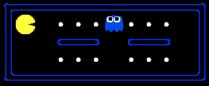
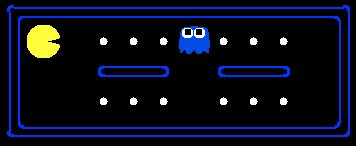

|
 |
 Teach a robot to crawl Help Pacman survive
In this project, you will experiment with both value iteration for model-based solution of known MDPs and q-learning for model-free learning of unknown ones. You will test your agetns first on a simple Gridworld domain, but then apply them to the task of teaching a simple simulated robot to crawl as well as to Pacman.
The code for this project contains the following files, which are available in a zip archive:
valueIterationAgents.py |
The file in which you will write your value iteration agent for solving known MDPs in the first part of the assignment. |
qlearningAgents.py |
The file in which you will write your generic q-learning agents for Gridworld as well as Pacman and the crawler robot (the same q-learning code will be used in all enviornments). |
analysis.py |
In this file you will put simple numerical answers to questions given in the project. |
mdp.py |
Abstract class for general MDPs. Useful to read
for implementing ValueIterationAgent |
abstractAgents.py |
Abstract classes for the all the agents you write. You should read
AbstractValueEstimationAgent and AbstractQLearningAgent
to know what functions to override. |
util.py |
Utilities. The class util.Counter may be useful, both now and in future projects. It provides methods such as, argMaxFair(), which may come in handy for your q-learner. |
gridworld.py |
The Gridworld code and test harness. You can also manually look in this file to see the values for exits in grids. |
featureExtractors.py |
Classes for extracting features on (state,action) pairs. Used for the approximate q-learning agent (in qlearningAgents.py). |
environment.py |
Abstract class for general reinforcement learning environments. Used
by gridworld.py. |
graphicsGridworldDisplay.py |
Plug-in for the Gridworld graphical display. |
graphicsUtils.py
oldGraphicsUtils.py
|
GUI code. |
textGridworldDisplay.py |
Plug-in for the Gridworld text interface. |
crawler.py |
The crawler code and test harness. You will run this but not edit it. |
graphicsCrawlerDisplay.py |
GUI for the crawler robot. |
What to submit: You will fill in portions of valueIterationAgents.py, qlearningAgents.py, and analysis.py during the assignment. You should submit only these files. Please don't change any other files.
Evaluation: Your code will be autograded for technical correctness. Please do not change the names of any provided functions or classes within the code, or you will wreak havoc on the autograder. However, the correctness of your implementation -- not the autograder's judgements -- will be the final judge of your score. If necessary, we will review and grade assignments individually to ensure that you receive due credit for your work.
Academic Dishonesty: We will be checking your code against other submissions in the class for logical redundancy. If you copy someone else's code and submit it with minor changes, we will know. These cheat detectors are quite hard to fool, so please don't try. We trust you all to submit your own work only; please don't let us down. If you do, we will pursue the strongest consequences available to us.
Getting Help: You are not alone! If you find yourself stuck on something, contact the course staff for help. Office hours, section, and the newsgroup are there for your support; please use them. If you can't make our office hours, let us know and we will schedule more. We want these projects to be rewarding and instructional, not frustrating and demoralizing. But, we don't know when or how to help unless you ask.
To get started, run the Gridworld harness in interactive mode:
python gridworld.py -m
You will see the two-exit Gridworld from class and the textbook.
Your agent's position is given by the blue dot, and you must move with the arrow
keys on the keyboard. Manual control may be a little frustrating if
the noise level is not turned down (-n), since you will
sometimes move in an unexpected direction. Such is the life
of a Gridworld agent! You can control many aspects of the simulation.
A full list is available by running:
python gridworld.py -h
You can check out the other grids, change the noise or discount, change the number of episodes to run and so on.
If you drop the manual flag (-m) you will get the RandomAgent
by default. Try:
python gridworld.py -g MazeGrid
You should see the random agent bounce around the grid until it happens upon an exit. Not the finest hour for an AI agent; we will build better ones soon.
Note: The Gridworld MDP is such that you first must enter a
pre-terminal state (the double boxes shown in the GUI) and then
take the special 'exit' action before the episode actually ends
(in the true terminal state called TERMINAL_STATE, which
is not shown in the GUI).
If you run an episode manually, your total return may
be less than you expected, due to the discount rate (-d).
Next, either use the text interface (-t) or look at the console output
that accompanies the graphical output. Do a manual run through any grid
you like, and notice that unless you specify quiet (-q) output,
you will be told about each transition the agent experiences.
As in Pacman, positions are represented by (x,y) cartesian coordinates
and any arrays are indexed by [x][y], with 'north' being
the direction of increasing y, etc. By default,
most transitions will receive a reward of zero, though you can change this
with the living reward option (-r).
You should definitely look at valueIterationAgents.py, and
mdp.py closely, and investigate parts of gridworld.py
as needed. The support code can be ignored entirely.
Hint: The util.Counter class in util.py
will make your life much easier in this assignment and future ones!
It acts like a dictionary, but has a getCount() method which
returns zero for items not in the Counter (rather than raising an exception
like a dictionary). We recommend that you read over all of its methods to
make sure you don't needlessly reimplement one of them.
Question 1 (8 points) First, you will write a value iteration agent in ValueIterationAgent, which has been partially specified for you in valueIterationAgents.py. Your value iteration agent is an offline planner, not a reinforcement agent, and so the relevant training option is the number of iterations of value iteration it should run (-i) in its initial planning phase. It should take an MDP on construction and run value iteration for the specified number of iterations before the constructor returns.
Recall that value iteration computes k-step estimates of the optimal values, Vk. In addition to responding to getAction like any agent, your value agent will return its value estimates through the getValue method. From these k-step value estimates, your agent should synthesize responses to policies and q-values in getPolicy(state) and getQValue(state, action), respectively, via one-step lookahead. Note that if a policy is synthesized from values of depth k (which reflect the next k rewards), that policy will actually reflect the next k+1 rewards (i.e. you return πk+1). Similarly, the q-values will also reflect one more reward than the values (i.e. you return Qk+1). You may assume that 100 iterations is enough for convergence in the questions below.
Select your value agent with the following command, which will compute a policy and execute it 10 times. Press a key to cycle through values, q-values, and the simulation. You should find that the value of the start state (V(start)) and the empricial resulting average reward are quite close.
python gridworld.py -a value -i 100 -k 10
Note: After viewing state and Q-values, press any key to exit.
Some benchmarks: On the default BookGrid, running value iteration for 5 iterations will still leave a 0.0 value for the start state (0,0):python gridworld.py -a value -i 5After 6 iterations, the start state should have the value 0.21 and the
east q-value should be 0.28.
python gridworld.py -a value -i 6Your code will be graded as follows. We will provide a new grid and check your values, q-values, and policies for specific iterations and at convergence (e.g. after 100 iterations). Most of the credit will rest on the converged values, but we will verify that if k iterations are passed in that you agent returns exactly Vk, Qk+1, and πk+1. Hint: make sure you program the "batch" version of value iteration where each vector Vk is computed from a fixed Vk-1, not the "online" version where one single vector of weights is updated in place.
Question 2 (1 points) How many rounds of value iteration are needed before the (0,3) state (bottom right state) of MazeGrid becomes non-zero? That is, for what smallest k will Vk be non-zero? The function question2() (in analysis.py) should return an integer answer. Note
we don't need the code used to obtain this number just the actual number.
Question 3 (2 points) Consider the policy learned on BridgeGrid with the default discount of 0.9 and the default noise of 0.2.
question3() in analysis.py should return a pair (discount, noise) that changes only one of the default values for discount or noise so that your agent will take the exit across the bridge.
Recall that noise refers to how often an agent ends up in a random successor state when they perform an action. A full credit answer will only change either the noise or the discount, but not both.
Question 4 (5 points) On the DiscountGrid, give any parameter
values which produce the following optimal policy types or
state that they are impossible by returning the string 'NOT POSSIBLE':
question4a() through question4e() should each return a 3-item tuple of (discount, noise, living reward) in analysis.py.
Note that your value iteration agent does not actually learn from experience. Rather, it ponders its MDP model to arrive at a complete policy before ever interacting with a real environment. When it does interact with the environment, it simply follows the precomputed policy (e.g. it becomes a reflex agent). This distinction may be subtle in a simulated environment like a Gridword, but it's very important in the real world, where the real MDP is not available.
Question 5 (7 points) You will now write a q-learning agent, which does very little on construction, but instead learns by trial and error from interactions with the environment through its update(state, action, nextState, reward) method. A stub of a q-learner is specified in QLearningAgent in qlearningAgents.py, and you can select it with the option '-a q'. For this question, you must implement the update, getValue, getQValue, and getPolicy methods, but you do not yet need to implement getAction.
Note: For getValue and getPolicy you should break ties arbitrarily.
With the q-learning update in place, you can watch your q-learner learn under manual control, using the keyboard:
python gridworld.py -a q -k 5 -mRecall that
-k will control the number of episodes your agent gets to learn.
Watch how the agent learns about the state it was just in, not the one it moves to, and 'leaves learning in its wake.'
Question 6 (3 points) Complete your q-learning agent by implementing epsilon-greedy action selection in getAction, meaning it chooses random actions epsilon of the time, and follows its current best q-values otherwise.
python gridworld.py -a q -k 100Your final q-values should resemble those of your value iteration agent, especially along well-traveled paths. However, your average returns will be lower than the q-values predict because of the random actions and the initial learning phase.
You can choose an element from a list uniformly at random by calling the random.choice function.
You can simulate a binary variable with probability p
of success by using util.flipCoin(p), which returns True with
probability p and False with probability 1-p.
Question 7 (2 points) First, train a completely random q-learner with the default learning rate on the noiseless BridgeGrid for 50 episodes and observe whether it finds the optimal policy.
python gridworld.py -a q -k 50 -n 0 -g BridgeGrid -e 1Now try the same experiment with an epsilon of 0. Is there an epsilon and a learning rate for which it is highly likely (greater than 99%) that the optimal policy will be learned after 50 iterations?
question7() should return EITHER a 2-item tuple of
(epsilon, learning rate) OR the string 'NOT POSSIBLE' if there is none.
Question 8 (1 points) With no additional code, you should now be able to run a q-learning crawler robot:
python crawler.pyIf this doesn't work, you've probably written some code too specific to the
GridWorld problem and you should make it more general to all MDPs. You will receive full credit if the command above works without exceptions.
This will invoke the crawling robot from class using your q-learner. Play around with the various learning parameters to see how they affect the agent's policies and actions. Note that the step delay is a parameter of the simulation, whereas the learning rate and epsilon are parameters of your learning algorithm, and the discount factor is a property of the environment.
Question 9 (1 points) Time to return to Pacman! Pacman will play games in two phases.
In the first phase, training, Pacman will begin to learn about the values of positions and actions.
Because it takes a very long time to learn accurate q-values even for tiny grids, Pacman's training games
run in quiet mode by default, with no GUI (or console) display. Once Pacman's training is complete,
he will enter testing mode. In test mode, Pacman's self.epsilon
and self.alpha will be set to 0.0, effectively stopping q-learning and disabling exploration, in order to allow Pacman to
exploit his learned policy. Test games are shown in the GUI by default. Without any code changes you should be able to run
q-learning Pacman for very tiny grids as follows:
python pacman.py -p PacmanQLearningAgent -a epsilon=0.05,gamma=0.8,alpha=0.2,numTrain=2000 -n 2100 -l small_grid.layNote that
PacmanQLearningAgent is already defined for you in terms
of the QLearningAgent you've already written. The -a
argument is used to pass options to an agent. The format for these arguments
is opt1=val1,opt2=val2,...optk=valk. These argument value
pairs are parsed into a dictionary which is parsed by the underlying agent. The values are accessible as
self.epsilon, self.gamma, self.alpha inside the agent. Note that a total of 2,100 games will be played,
but because of the numTrain argument value of 2,000, you will only
see Pacman play the last 100 of these games. While you're not missing much watching Pacman
losing for several hundred episodes as he learns q-values, you can watch his training as well by
replacing the numTrain option with numWatchTrain.
epsilon, Pacman will do quite poorly even after having learned a good policy: this is because he ocassionally
makes a random exploratory move which results in his death.
As a benchmark, it should take about 1,000 games into training before Pacman's rewards for
a 100 episode segment becomes positive, reflecting that he's started winning more than losing. By the end
of training, it should remain positive and be fairly high.
Make sure you understand what is happening here: the MDP state is the exact board configuration facing Pacman, with the now complex transitions describing an entire ply of change to that state. The intermediate game configurations in which Pacman has moved but the ghosts have not replied are not MDP states, but are bundled in to the transitions.
Once Pacman is done training, he should win very reliably in test games (at least 90% of the time), since now he is exploiting his learned policy. We will test your q-learner on its ability to clear the small grid most of the time.
Now it's time to try a slightly harder maze with more food:
python pacman.py -p PacmanQLearningAgent -a epsilon=0.05,gamma=0.8,alpha=0.2,numTrain=2000 -n 2100 -l med_grid.layWatch Pacman's training scores. He doesn't do very well on this maze; his average training rewards will remain negative throughout training. Even at test time, he will play badly. losing about 80% of his test games.
So why does it take so long for Pacman to learn how to win? It's because each board configuration is a separate state and he must, for example, learn to run away from the ghost over and over. He has no way to represent that running into a ghost is bad for all positions. Obviously, this approach will not scale.
Question 10 (3 points)
Most of why Pacman fails for larger grids in the last problem is that there are many irrelevant details in each state, and so the same lessons must be learned many times. However, just as with minimax, we can compute (approximate) values based on aspects of the state. For example, if a ghost is about to eat Pacman, it's irrelevant which subset of the food in the grid is present, so we should be able to learn much about ghost fear from the ghost positions alone. Alternatively, if a ghost is sufficiently far away it doesn't matter much exactly how far away or exactly where it is.
In this section, we will break the state down into general features which describe partial aspects of the state. To do so, you will implement approximate q-learning as described in lecture. Your code will go in the ApproximateQLearningAgent class in qlearningAgents.py. Recall that approximate q-learning assumes the existence of a feature function f(s,a) over state and action pairs, which yields a vector f1(s,a) .. fi(s,a) .. fn(s,a) of feature values. We provide feature functions for you in featureExtractors.py. Note that our implementation of feature vectors returns a dictionary containing the non-zero pairs of features and values; it is assumed that all omitted features have value zero.
Our q-functions will take the following parametric form
python pacman.py -p TestPacmanApproximateQLearningAgent -a epsilon=0.05,gamma=0.8,alpha=0.2,numTrain=2000 -n 2100 -l small_grid.layOnce you're confident that your approximate learner works with the identity features, run your approximate q-learning agent with our custom feature extractor. If you want details about how this works, check out
SimplePacmanFeatureExtractor in
featureExtractors.py.
python pacman.py -p SimplePacmanApproximateQLearningAgent -a epsilon=0.05,gamma=0.8,alpha=0.2,numTrain=2000 -n 2100 -l small_grid.layPacman should now be able to handle the more complicated grid from the last question the standard q-learner couldn't handle,
python pacman.py -p SimplePacmanApproximateQLearningAgent -a epsilon=0.05,gamma=0.8,alpha=0.2,numTrain=2000 -n 2100 -l med_grid.layYou will be tested on your agent's ability to reliably clear this maze after 2,000 episodes of training.